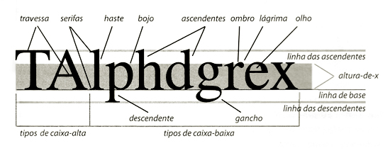
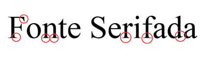
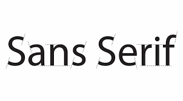
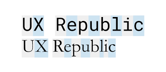
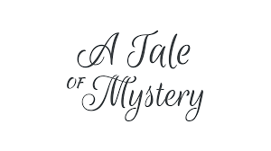
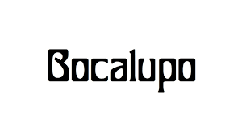

Glifos
Um glifo é um símbolo gráfico que representa um caractere ou uma ideia específica. Esses símbolos podem ser encontrados em diferentes contextos, como em sistemas de escrita, linguagens antigas, hieróglifos egípcios e até mesmo em logotipos e marcas. Os glifos são usados para transmitir informações visuais e podem ter significados diferentes dependendo do contexto em que são utilizados.
Por que os glifos são importantes?
Legibilidade : A forma e o design de cada glifo influenciam diretamente na facilidade com que lemos e compreendemos um texto. Glifos claros e bem desenhados facilitam a leitura, enquanto glifos confusos podem dificultar.
Estética : Os glifos contribuem significativamente para a aparência geral de um texto ou design. Diferentes tipos de glifos transmitem diferentes sensações e podem ser usados para criar um determinado estilo.
Identidade visual : As fontes tipográficas, que são conjuntos de glifos, podem ajudar a criar uma identidade visual única para uma marca ou projeto.
Comunicação : Além de transmitir informações, os glifos podem transmitir emoções e significados subjacentes. Por exemplo, um ponto de exclamação pode expressar surpresa ou entusiasmo.
Exemplos da importância dos glifos
Sinais de trânsito : Os sinais de trânsito usam glifos simples e claros para transmitir informações importantes de forma rápida e eficaz.
Ícones : Ícones são glifos simplificados que representam conceitos ou ações. Eles são amplamente utilizados em interfaces de usuário e aplicativos.
Logotipos : Muitos logotipos são baseados em glifos personalizados que representam a marca de uma empresa.
Anatomia das fontes
A anatomia das fontes é como um mapa que nos guia pelas diferentes partes que compõem cada letra. Entender essas partes nos ajuda a apreciar a beleza e a complexidade da tipografia, além de nos permitir escolher a fonte ideal para cada projeto. Quais são as principais partes de uma fonte?
Imagine cada letra como um corpo com diferentes membros. As partes principais de uma fonte são:
Altura-x : Corresponde à altura da letra "x" minúscula. É um ponto de referência importante para a proporção das letras.
Ascendentes : São as partes das letras que se estendem acima da linha da altura-x, como os traços superiores do "h" e "b".
Descendentes : São as partes das letras que se estendem abaixo da linha de base, como os traços inferiores do "g" e "p".
Serifas : São os pequenos traços que se estendem das extremidades das hastes das letras. Elas podem ser grossas ou finas e influenciam a aparência geral da fonte.
Hastes : São os traços principais das letras, como o corpo do "H" ou o traço vertical do "l".
Ovais : São as curvas fechadas das letras, como o "O" ou o corpo do "Q".
Apices : São os pontos agudos formados pela junção de duas hastes, como o topo do "A".
Categoria das fontes
Para atrair a atenção do leitor e transmitir nossa mensagem de maneira eficaz, escolher uma boa fonte é essencial. E como nós temos uma fasta lista de opções de fontes,nós a separamos por categoria.
Fonte serifada : Uma fonte serifada é um tipo de fonte tipográfica que possui pequenas extensões ou traços decorativos chamados "serifas" no final das hastes das letras. As serifas são detalhes que ajudam a guiar o olhar ao longo do texto, o que pode melhorar a legibilidade em textos impressos e longos blocos de texto. Exemplos clássicos de fontes serifadas incluem Times New Roman, Garamond e Georgia. As fontes serifadas são frequentemente associadas a uma aparência mais tradicional e formal.
Fonte sans-serif : Uma fonte sans-serif é um tipo de fonte tipográfica que não possui as pequenas extensões ou traços decorativos (serifas) no final das hastes das letras. "Sans" é uma palavra francesa que significa "sem", então "sans-serif" literalmente significa "sem serifas". As fontes sans-serif são conhecidas por seu design limpo, moderno e minimalista, e são amplamente usadas em telas digitais por sua clareza e legibilidade. Exemplos populares de fontes sans-serif incluem Arial, Helvetica e Verdana. Elas são frequentemente escolhidas para interfaces de usuário, sinalização e designs contemporâneos.
Fontes monoespaçadas : Fontes monoespaçadas são tipos de fontes em que cada caractere ocupa a mesma quantidade de espaço horizontal. Isso significa que as letras "i" e "w", por exemplo, têm a mesma largura. Essas fontes são frequentemente usadas em programação e codificação porque alinham facilmente o texto e facilitam a leitura de códigos. Além disso, são úteis em tabelas e em contextos onde a uniformidade de espaçamento é importante. Exemplos comuns de fontes monoespaçadas incluem Courier, Consolas e Monaco.
Nota-se que a frase de cima, ocupa bem mais espaço que a frase de baixo.
Fontes script : Essas fontes possuem a ideia de imitar a escrita manual, geralmente cursiva, com letras que fluem juntas. Fontes script são frequentemente usadas para convites, cartões de felicitações, e outros designs onde se deseja uma sensação de elegância ou informalidade.
Fontes display : Fontes display são projetadas para chamar a atenção e são geralmente usadas em títulos, cabeçalhos, logotipos e outras áreas onde se deseja um impacto visual forte. Elas não são tipicamente usadas para longos blocos de texto, pois podem ser difíceis de ler em tamanhos menores. As fontes display podem variar bastante em estilo, incluindo serifa, sans-serif, script, e até fontes decorativas e experimentais.
Comparando as fontes serifadas com as não serifadas
| Serifadas | Não Serifadas |
|---|---|
| Times New Roman | Roboto |
| Georgia | Matemasie |
| Bodoni Moda SC | Bungee |
| Sedan | Grey Qo |
| Merriweather | Pacifico |